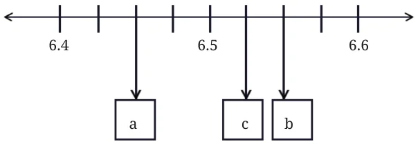
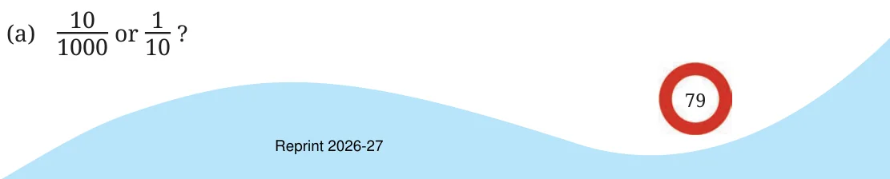
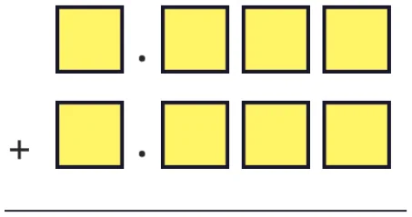

- 1.Convert the following fractions into decimals:
\(\frac{5}{100} \frac{16}{1000} \frac{12}{10} \frac{254}{1000}\)
- 2.Convert the following decimals into a sum of tenths, hundredths
and thousandths:
- (a)0.34 (b) 1.02 (c) 0.8 (d) 0.362
- 3.What decimal number does each letter represent in the number
line below?

- 4.Arrange the following quantities in descending order:
- (a)11.01, 1.011, 1.101, 11.10, 1.01
- (b)2.567, 2.675, 2.768, 2.499, 2.698
- (c)4.678 g, 4.595 g, 4.600 g, 4.656 g, 4.666 g
- (d)33.13 m, 33.31 m, 33.133 m, 33.331 m, 33.313 m
- 5.Using the digits 1, 4, 0, 8, and 6 make:
- (a)the decimal number closest to 30
- (b)the smallest possible decimal number between 100 and 1000.
- 6.Will a decimal number with more digits be greater than a decimal
number with fewer digits?
- 7.Mahi purchases 0.25 kg of beans, 0.3 kg of carrots, 0.5 kg of potatoes,
0.2 kg of capsicums, and 0.05 kg of ginger. Calculate the total weight of the items she bought.
- 8.Pinto supplies 3.79 L, 4.2 L, and 4.25 L of milk to a milk dairy in
the first three days. In 6 days, he supplies 25 litres of milk. Find the total quantity of milk supplied to the dairy in the last three days.
- 9.Tinku weighed 35.75 kg in January and 34.50 kg in February. Has
he gained or lost weight? How much is the change?
- 10.Extend the pattern: 5.5, 6.4, 6.39, 7.29, 7.28, 6.18, 6.17, ____, _____
- 11.How many millimeters make 1 kilometer?
- 12.Indian Railways offers optional travel insurance for passengers
who book e-tickets. It costs 45 paise per passenger. If 1 lakh people opt for insurance in a day, what is the total insurance fee paid?
- 13.Which is greater?

- (b)One-hundredth or 90 thousandths?
- (c)One-thousandth or 90 hundredths?
- 14.Write the decimal forms of the quantities mentioned (an example
is given):
- (a)87 ones, 5 tenths and 60 hundredths \(= 88.10\)
- (b)12 tens and 12 tenths
- (c)10 tens, 10 ones, 10 tenths, and 10 hundredths
- (d)25 tens, 25 ones, 25 tenths, and 25 hundredths
- 15.Using each digit \(0 - 9\) not more than once, fill the boxes below so
that the sum is closest to 10.5:

- 16.Write the following fractions in decimal form:
- (a)\(\frac{1}{2}\) (b) \(\frac{3}{2}\)
- (c)\(\frac{1}{4}\) (d) \(\frac{3}{4}\)
- (e)\(\frac{1}{5}\) (f) \(\frac{4}{5}\)